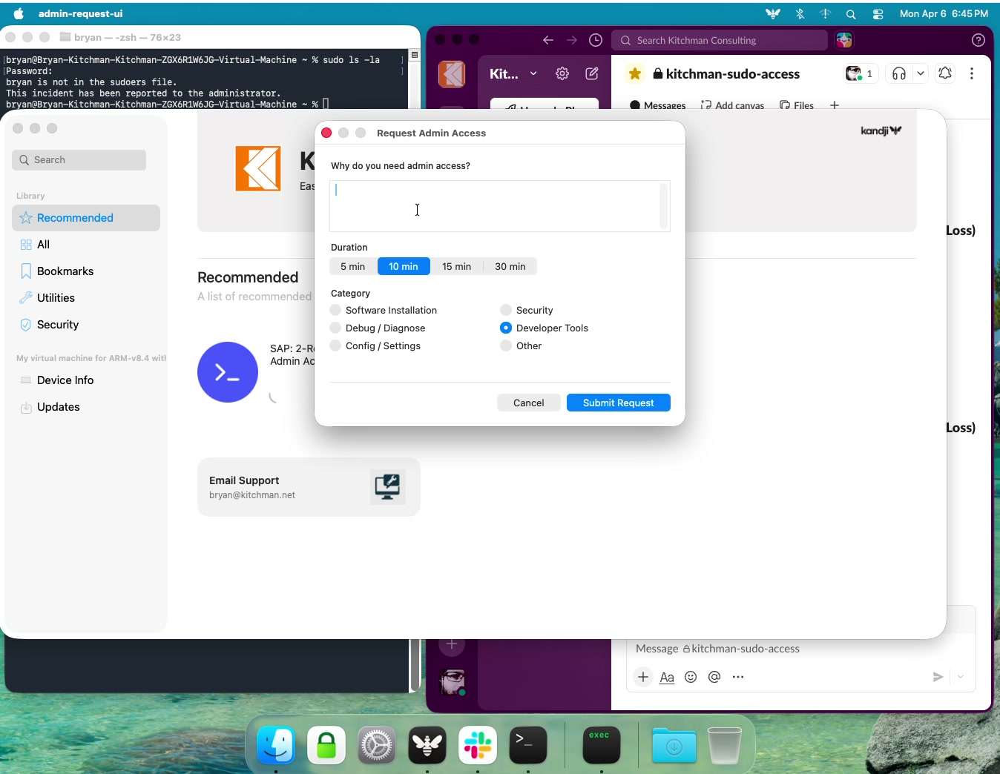
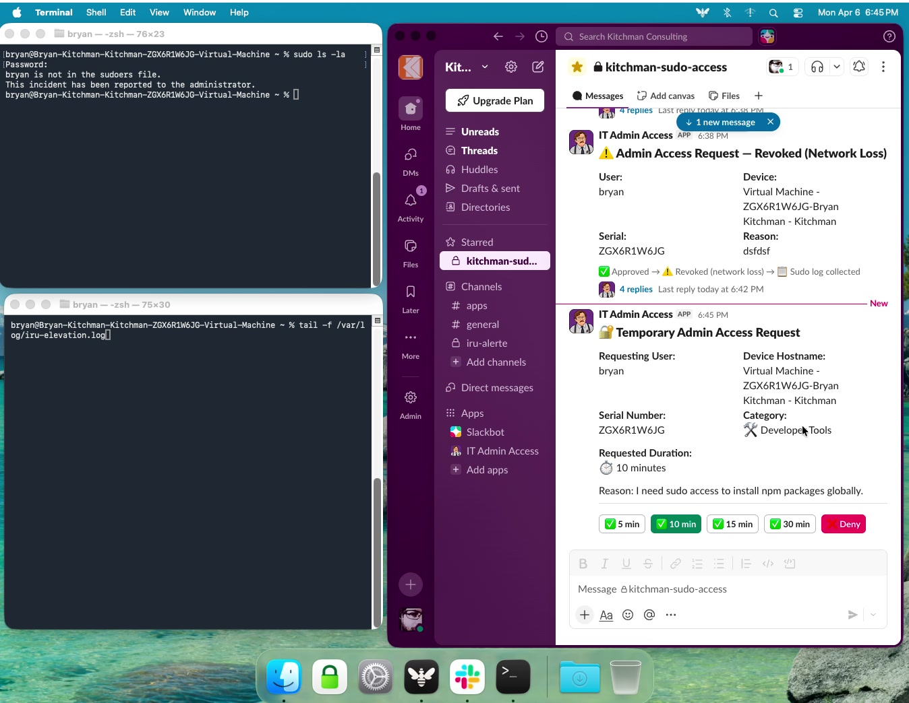
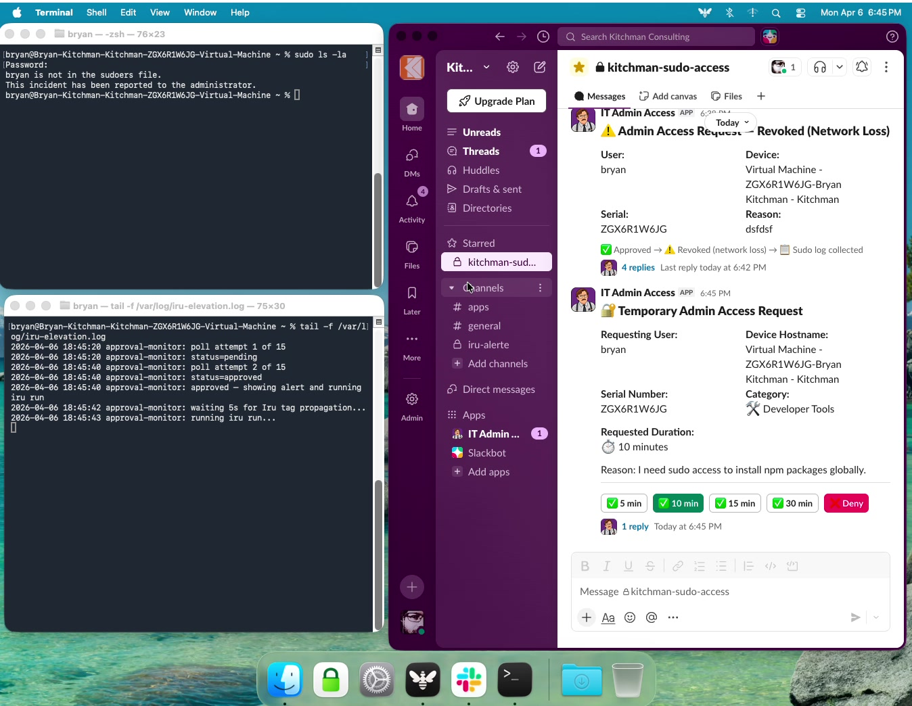
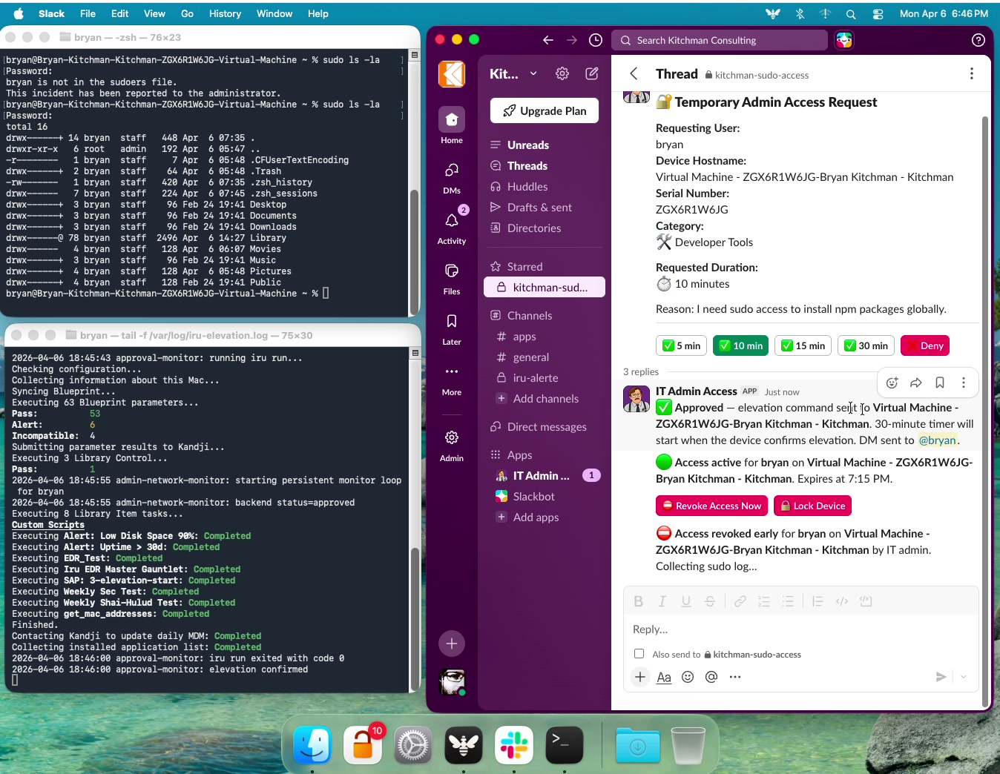
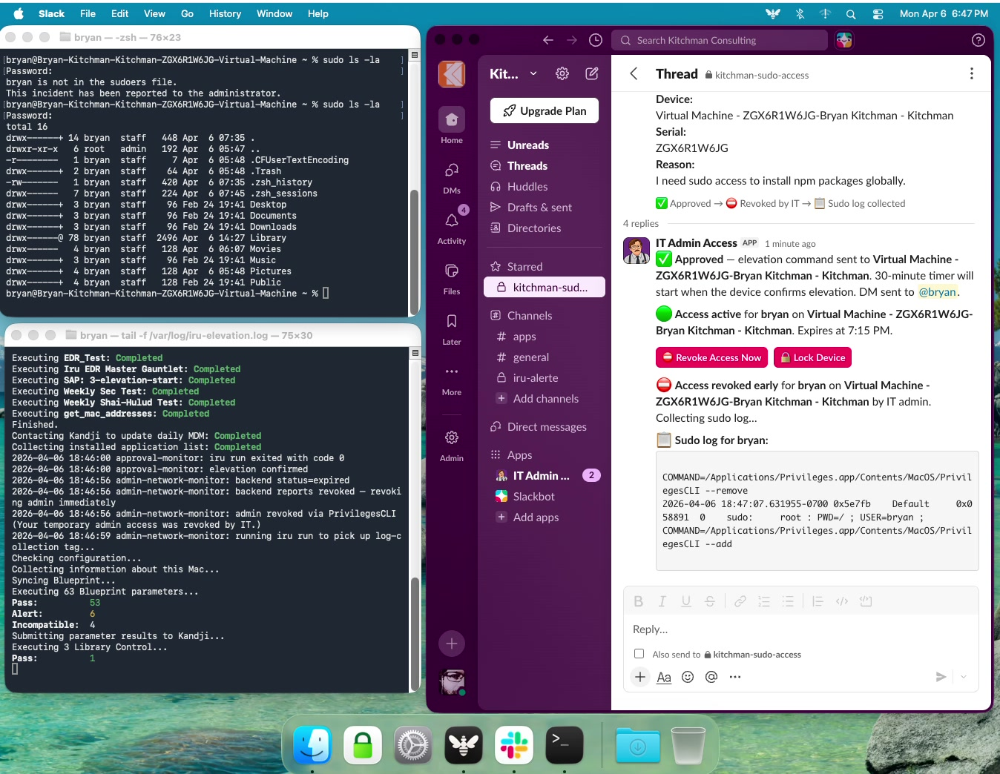

The Problem
Every IT team knows the conversation. A developer needs to install a dependency. An engineer needs to run a system-level diagnostic. A designer needs to update a font cache. The ask is always the same: "Can you just make me a local admin for a bit?"
The traditional answers are both bad. Option A: give them permanent local admin rights, accept the expanded attack surface, and hope they don't accidentally break their system or run a malicious installer. Option B: have IT remote in every single time, creating a bottleneck that interrupts both the user and the IT team.
I wanted a third path: just-in-time admin access, approved in Slack, time-limited to 5–30 minutes, and fully audited. No persistent privilege. No IT babysitting. A complete audit trail of every command run during the window.
Goal: Users get self-service access in under 60 seconds. IT maintains approval control. Every session auto-expires. Every sudo command is logged and shipped to the Slack thread.
How It Works

launchctl asuser + sudo execution context.
/status every 20 seconds. On approval, it calls iru run directly — the fastest path to processing Library Items. The user sees an "approved" alert within 20 seconds. Each duration maps to a distinct Iru tag, which scopes its own SAP Privileges MDM profile with the matching ExpirationInterval.

kandji run to apply the elevation tag immediately.PrivilegesCLI --add to grant admin, enables a sudoers drop-in for command logging, notifies the backend to start the N-minute timer, and starts a persistent network monitor LaunchDaemon. The monitor loops continuously — checking admin group membership every 1s, network every 5s, and backend status every 60s. If network is lost, admin is stripped immediately and re-elevation attempts via the Privileges app are blocked within 1 second until connectivity is restored.

collect-sudo-log.sh, which ships the sudoers log to the backend. The backend uploads it as a file attachment in the original Slack approval thread.

sudo command the user ran during the session is visible to IT without leaving Slack.Architecture

The backend is a fully serverless AWS SAM application. There's no always-on infrastructure — all compute is Lambda functions invoked by API Gateway or EventBridge Scheduler.
API Gateway + Lambda
9 Lambda functions handle request intake, Slack actions, device confirmations, log receipt, status polling, and expiration. All endpoints behind API key auth.
DynamoDB
Single-table design stores each request's full lifecycle: status, timestamps, Slack thread IDs, device ID, and actor identity for every state transition.
EventBridge Scheduler
One-time schedules per session for the 5-minute warning (T+25) and expiration (T+30). Auto-delete after firing via ActionAfterCompletion: DELETE.
Iru MDM
Two tags act as signals. Elevation tag triggers the Privileges profile. Log-collection tag triggers log shipping. Device-side iru run forces immediate processing.
SAP Privileges
Open-source macOS app providing controlled, time-limited local admin via a LaunchAgent. Scoped via an Iru config profile — only activates on tagged devices.
System Keychain
API key stored in the macOS system keychain (accessible by root) via a provisioning script. Retrieved at runtime — never hardcoded in source.
The Slack ↔ Lambda Handshake
Slack requires a 200 response within 3 seconds of an interactive action. But processing an approval — hitting Iru, writing to DynamoDB, creating EventBridge schedules — takes longer. The solution is a two-Lambda pattern:
handleSlackActionverifies the Slack HMAC-SHA256 signature and immediately invokesprocessSlackActionasynchronously (InvocationType: 'Event').handleSlackActionreturns 200 to Slack within milliseconds.processSlackActionruns independently and handles all the heavy work.
Timer Anchoring
An early design mistake: the 30-minute timer was started at approval time. But there's latency between IT clicking Approve and the device actually being elevated — MDM check-in, Iru running the script, PrivilegesCLI executing. A user could lose 3–5 minutes before they even had admin.
The fix: elevation-start.sh POSTs to a /start endpoint when elevation is confirmed on device. The backend creates EventBridge schedules from that timestamp. The user always gets a full 30 minutes from the moment they're actually elevated.
# elevation-start.sh — notify backend that elevation is confirmed
HTTP_STATUS=$(curl -s -o "$ELEVATION_RESPONSE_FILE" -w "%{http_code}" \
-X POST "$API_ENDPOINT" \
-H "Content-Type: application/json" \
-H "x-api-key: $API_KEY" \
--max-time 15 \
-d "{\"requestId\":\"$REQUEST_ID\",\"serial\":\"$SERIAL\"}")Security Features
After eleven rounds of security audits, the system incorporates defense-in-depth across every layer:
Slack Signature Verification
Every webhook verified with HMAC-SHA256. Requests older than 5 minutes rejected. Timing-safe comparison via crypto.timingSafeEqual.
DynamoDB Conditional Writes
All status transitions use ConditionExpression atomically. Two IT admins clicking Approve simultaneously results in exactly one approval.
Input Validation Everywhere
UUID format validation on all device endpoints. Field length limits. Serial validated as 8–14 uppercase alphanumeric. Lambda endpoints reject non-object JSON bodies.
Slack mrkdwn Injection Prevention
All user-controlled fields passed through escapeSlack() before embedding in Block Kit messages. Prevents link injection via <URL|text> syntax.
Device Identity Binding
Serial stored at request time is validated against every subsequent device call. A device can only interact with its own session — not another device's.
Network Loss Revocation & Offline Enforcement
The network monitor runs as a persistent loop — not a periodic LaunchDaemon job — so timing is no longer dependent on a 60-second StartInterval. Admin group membership is checked every 1 second. Network connectivity is checked every 5 seconds via curl to captive.apple.com (requiring HTTP 200 exactly — not just any response). Backend status is polled every 60 seconds.
When network loss is detected, admin is stripped immediately and an offline enforcement loop begins: the SAP Privileges mobileconfig remains on the device while offline (it can't be removed without MDM connectivity), so a user could theoretically re-elevate themselves via the Privileges app. The loop strips the admin group membership within 1 second of any re-elevation attempt — both via PrivilegesCLI --remove and directly via dscl. The loop runs until network is restored and the backend is notified, or a 2-hour TTL expires.
Auth errors (401/403) from the backend fail-secure — access is revoked immediately rather than retried. HTTP 000 (no response) is treated as network loss rather than a transient error.
IT Slash Command
/admin-status restricted to a configured Slack user ID allowlist. Empty allowlist defaults to denying all access (fail closed).
Off-Hours Delegation
Optional off-hours auto-approval routes to an on-call admin. Configuration errors fail closed — requests held for manual review, never auto-approved on misconfiguration.
Transient Failure Resilience
Iru API calls use exponential backoff (1s, 2s) for 5xx/429 — up to 3 attempts. 4xx throws immediately. Prevents a single rate-limit from dropping an entire operation.
Partial Failure Resilience
Elevation removal is the critical path — if it fails, EventBridge retries. Log collection failure is non-critical: session is still marked expired and IT is alerted.
Audit Trail & Delayed Notifications
Every transition records timestamp and actor. User DMs are deliberately delayed until sudo log collection succeeds — audit trail secured before user is notified.
Secrets Management
API key in macOS system keychain — never in scripts. Lambda secrets via AWS SSM. Module-load-time validation ensures Lambdas fail fast if secrets are missing.
Atomic Metadata Writes
Session metadata at /var/root/.iru-elevation/meta.json (mode 600). mktemp + mv pattern — a crash mid-write never leaves a partial file.
iru run Mutex Lock
File lock at /var/run/iru-run.lock serializes all iru run invocations across three daemons. PID-aware — detects and clears stale locks from killed processes.
Post-Run State Verification
After each iru run, daemons verify the expected state change occurred. Single retry after 120s if not confirmed — absorbs Iru tag propagation latency.
Key Design Decisions
Why Iru Tags as Signals?
Iru Library Items can be scoped to specific device tags. By scoping a Library Item to the temp-admin-elevation tag, we get Iru's built-in delivery guarantees: retry on failure, run-at-install semantics, and immediate execution on iru run. We don't need to build our own device delivery mechanism — Iru handles it.
Why SAP Privileges Instead of dseditgroup?
Direct dseditgroup calls add the user to the local admin group and require explicit cleanup. SAP Privileges integrates with macOS's authorization model, provides a visible UI indicator, supports an ExpirationInterval MDM key as a safety-net fallback, and is open-source with active maintenance. The MDM profile approach means the app only works on tagged devices.
Why Two Iru Tags?
Separation of concerns. The elevation tag is removed on revocation or expiration. The log-collection tag is assigned on revocation or expiration. These are often simultaneous but not always. Keeping them separate avoids race conditions and makes each Library Item's trigger unambiguous.
Why EventBridge Scheduler Instead of SQS Delayed Messages?
EventBridge Scheduler supports named one-time schedules that can be deleted by name. Critical for the revoke flow: if IT revokes at T+15, we cancel the T+25 warning and T+30 expiration schedules. SQS delayed messages can't be cancelled after enqueuing.
Lessons Learned
The real attack surface is the device, not the backend
Most of the interesting security findings were in shell scripts — unvalidated data in generated scripts, metadata files with wrong permissions, Python subprocesses without timeouts. Lambda code is easy to reason about; device-side bash is where subtle bugs hide. Treat shell scripts as first-class security artifacts.
Race conditions require database-level guards, not application-level checks
The "fetch → check status → update" pattern is a TOCTOU race. Two concurrent Lambda invocations can both pass the check and both apply the update. DynamoDB's ConditionExpression moves the check into the atomic write. Non-negotiable for state machines where each transition must happen exactly once.
Anchor timers to device confirmation, not approval
Any time you have an async pipeline (approve → MDM deliver → device run → confirm), the user experience is only as good as the last step. Anchoring timers to device confirmation cost one extra API call but resulted in users always getting the full 30-minute window they were promised.
Iterative security auditing finds what point-in-time reviews miss
Eleven rounds of security audits found meaningful issues in almost every round — not because earlier rounds were bad, but because fixing issues and adding features creates new surface area. Build security review into your iteration cycle, not just your launch gate.
Zero open findings is achievable — accept risk explicitly, not by omission
The accepted-risk items were each evaluated deliberately. Accepted risk with documented rationale is categorically different from unfixed risk with no explanation.
New features are new attack surface — review them immediately
The slash command was the highest-severity new finding: signature verification was in place, but no authorization check existed. Any workspace member could enumerate all active admin sessions. The fix was three lines. The gap between "implemented" and "authorized" is where high-severity findings live.
Fail closed beats fail open, especially for access control
The off-hours auto-approval feature had a subtle misconfiguration path that auto-approved every request on invalid configuration. The correct behavior: if you're not sure it's off-hours, require manual approval. Any access-control feature that grants permissions by default on config error is a security risk.
Escape at the output boundary, not at ingestion
Early versions sanitized input at ingestion time — this leads to double-encoding bugs and false confidence. Store raw data; escape at every output boundary. Each output context (Slack mrkdwn, JSON, shell) has different escaping requirements.
Never call a process runner from within a script being run by that process runner
elevation-start.sh was calling iru run at the end of its own execution — but it runs inside an iru run triggered by the approval monitor. The agent holds an internal lock during execution; the nested call deadlocked the outer agent. A nested iru run inside an Iru script is a deadlock by construction.
Verify the check actually checks something
The UTF-8 validation in receiveLog was Buffer.from(x).equals(Buffer.from(x)) — a tautology that always returns true. It passed code review because it looked correct. Always test security checks with input that should fail. A check that never rejects is not a check.
By the Numbers
Recently Shipped
- Background approval monitor: Self Service script exits in under 5 seconds. A background LaunchDaemon polls for approval every 20 seconds — no more blocking the Iru Self Service app.
- Removed all
blankPushcalls:blankPushtriggers an MDM check-in, not a Library Item run. Device-sideiru runis now the exclusive mechanism for picking up tag changes. - iru run mutex lock: Three background daemons could previously call
iru runconcurrently. A PID-aware file lock serializes all invocations. - Delayed revocation DMs: Users are not notified until after sudo logs are successfully collected. Audit trail secured first.
- Slack original message lifecycle: The approval message is updated to a "completed" state when log collection succeeds — outcome and timeline shown, all buttons removed.
- Fixed nested
iru rundeadlock: Removed the redundant inneriru runcall insideelevation-start.shthat deadlocked the outer agent. - Switched to
iru run --reset-daily: Forces full re-evaluation even if the agent's daily run already completed. - Post-run state verification with 120s retry: Daemons confirm expected state changes after every
iru run. - Off-hours failure visibility: If off-hours auto-approval fails, a warning posts to the IT Slack thread immediately.
- Degraded log warning: If timezone conversion fails during log collection, a visible warning is prepended to the uploaded log.
What Does It Cost?
Fully serverless means you only pay for what runs. At typical usage the entire stack costs under a dollar a month — Lambda and EventBridge stay within the permanent free tier, and Bedrock (the AI risk scoring) is the only real line item.
Bedrock is ~95% of cost because every session triggers a Claude Sonnet 4 risk re-score after the sudo log arrives. Scores are cached 48h per user, so repeat users reduce this further. See full cost breakdown →
Version History
Each release is tagged on GitHub — download any version as a zip or clone the tag directly.
AI Risk Dashboard · Sudo Log Storage · Security Hardening
- IT risk dashboard hosted on S3 + CloudFront — per-user request history, AI risk scores (Low/Medium/High/Critical), expandable sudo logs
- Single-use Slack links — every approval message includes a one-click dashboard link with a UUID session token; no API key entry required
- AI-powered risk scoring — Amazon Bedrock (Claude Haiku) evaluates actual sudo commands, not just request metadata; re-scored after each session log arrives
- Sudo log stored in DynamoDB — viewable inline in the dashboard; normalized to
HH:MM:SS <command>with PrivilegesCLI revocation entries stripped - Security fixes — 14 issues resolved across two full audits: race condition in schedule creation, Bedrock IAM scope, CORS wildcard, XSS escaping, token session window, HTTPS enforcement, and more
Network Enforcement · AppKit Form · Duration Selection
- Network enforcement — LaunchDaemon revokes admin if device goes offline during elevation; offline enforcement loop blocks re-elevation until backend is notified
- Native AppKit request form — replaces AppleScript dialog; single-screen window with duration picker and reason category selector
- Duration & category selection — users choose 5/10/15/30 min; IT can override at approval time; reason categories drive trend analysis
- Off-hours auto-approval — configurable on-call Slack user ID for automatic approval outside business hours
- IT device lock — MDM-lock button in Slack thread for emergency response during active sessions
Initial Release
- Self Service Slack-approval workflow for temporary local admin elevation
- Interactive Approve/Deny buttons, EventBridge-scheduled expiration, 5-minute warning
- Sudo log collection via macOS unified log, uploaded to Slack thread on session end
- API key in System Keychain, serial number binding, DynamoDB request tracking
What's Next
- Extended audit retention: Export DynamoDB records to S3 before TTL expiration for long-term compliance storage.
- Rotation-aware off-hours: Pull the on-call rotation from PagerDuty rather than a static Slack user ID.
- Dashboard pagination: Cursor-based paging for large request histories instead of full table scans.
Built for a macOS-first environment using Iru as the MDM, but the core pattern — Slack-gated JIT access with EventBridge timers and MDM tag signaling — translates to other MDM platforms with an API. Source on GitHub →